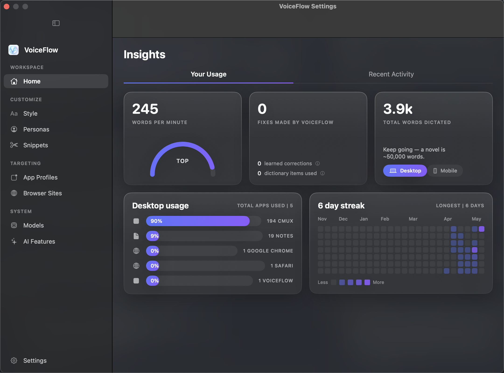

Hold ⌥ Space, speak, release. Your words appear formatted and pasted in 370 milliseconds — every AI model running on your Mac. Startling accuracy. Zero cloud. Zero subscription. Zero data collection. Ever.
370 ms speech-to-text — speak, release, done
Cloud-grade AI quality, entirely on your Mac
Every model runs on-device — nothing leaves your Mac
No subscription, no limits, no account ever
Other dictation tools send your voice to remote servers. VoiceFlow was built from scratch in Rust and Swift to prove you don't have to sacrifice privacy for quality.
Hold ⌥ Space anywhere on your Mac to record. Release to transcribe and paste instantly. No app switching, no extra steps.
Every AI model runs on your hardware. Your voice is processed locally and never recorded, stored, or transmitted. Not even anonymized telemetry.
A Rust-powered pipeline transcribes, formats, and pastes in under four-tenths of a second. No network round-trips — just raw local speed.
A local LLM cleans up grammar, adds punctuation, and removes filler words. Post-processing normalizes numbers ($50,000), percentages (25%), times (3:30 PM), phone numbers, dates, and abbreviations.
Detects your frontmost app and adjusts tone automatically. Professional for email, casual for Slack, technical for code editors. Custom prompts per app.
A local vision model reads your screen to extract names, project terms, and writing context — so proper nouns are spelled correctly without a cloud lookup.
Fix a word once and VoiceFlow remembers. It monitors your edits and applies learned corrections to future dictations automatically.
Say "my signature" and it expands to your full sign-off. Create unlimited custom trigger phrases that expand into any text you want.
Say "summarize this" and a local LLM reads the current text field and appends a bullet-point summary. A live status pill shows progress through each step.
Multiple AI models run in tandem on your Mac: speech-to-text captures every word, a language model formats it, and a vision model reads your screen for context. The same quality you'd expect from a cloud API.
Unlike cloud dictation tools that give you a single mode, VoiceFlow lets you control everything — AI models, visual context, per-app formatting, and more.
VoiceFlow runs a 16K-token context window with the persona, vocabulary, on-screen text, and formatting rules permanently warm in the prompt prefix. Every dictation re-uses that cache — only your newly-spoken words get evaluated. The chart below shows real prompt-eval latency from this build: even long utterances stay well under a second.
The first dictation after launch takes ~5 seconds while VoiceFlow memorizes your settings once. Every dictation after that runs in well under a second, from the moment you stop speaking to formatted text in your app. The AI generates roughly 100 words per second; voice recognition completes in about 150 milliseconds. Everything happens entirely on your Mac.
Words leave your mouth at ~140 wpm. They leave your fingers at ~40 wpm. VoiceFlow adds 370 ms of processing per dictation — that's it. The gap compounds into entire weeks of your life every year, formatted and pasted with startling accuracy.
1,000 words a day is one focused email or a page of notes — dictate that volume and VoiceFlow gives you back nearly a working week every year. Heavy writers reclaim several. Every word is transcribed, punctuated, formatted, and pasted on-device with no cloud round-trip in the loop.
VoiceFlow v2.0 ships a complete settings rebuild on a new "Liquid Glass" design system, paired with the Parakeet + Bonsai model defaults. The new Insights dashboard tracks your dictation pace, the apps you dictate into most, and your daily activity streak. Personas carry editable vocabulary lists that bias the LLM toward your domain terms — everything is computed and stored on-device.

A smile-shaped speed gauge labels your dictation pace as Steady, Fast, or Top. Per-app bars show where you dictate most. A streak heatmap tracks every active day. Built-in personas come seeded with domain vocabulary — Software Engineer ships with kubectl, Postgres, Terraform, gRPC and more, and you can add your own with one click. Every number is computed locally; nothing syncs anywhere.
See how VoiceFlow stacks up against popular cloud-based alternatives.
| VoiceFlow | Wispr Flow | macOS Dictation | |
|---|---|---|---|
| Price | Free forever | $12–15/mo | Free (built-in) |
| Privacy | 100% on-device | Cloud-processed | Partial — sends to Apple |
| Internet required | Never | Always | For enhanced mode |
| Smart formatting | Local LLM | Cloud AI | No |
| App-aware context | Email, Slack, code | Email, Slack, code | No |
| Voice punctuation | Full command set | Yes | Basic |
| Voice snippets | Yes | Yes | No |
| Visual context (VLM) | Free — local VLM | Pro plan only | No |
| Correction learning | Learns from edits | Auto-learns | No |
| Number formatting | Currency, %, time, dates | Yes | No |
| Summarize text | Voice-triggered | No | No |
| Custom AI models | Swap anytime | Locked to vendor | No |
| Open-source | Fully auditable | Closed-source | Closed-source |
| Data collection | None | Voice sent to cloud | Voice sent to Apple |
Competitor information based on publicly available documentation as of February 2026.
Download VoiceFlow, run the setup wizard, pick your AI models, and you're ready. No account. No API key. No subscription. Free forever.
Requires macOS 15 Sequoia or later · Apple Silicon (M1 or newer) · 16 GB RAM recommended